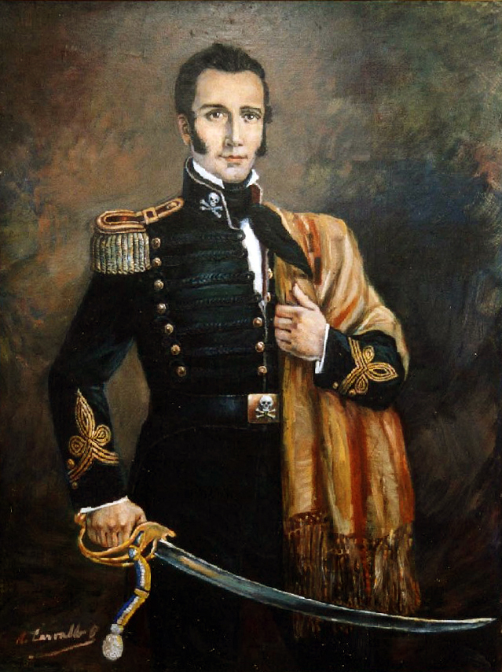

Vida

Señora, dicen que donde,
mi madre dice, dijeron,
el agua y el viento dicen
que vieron al guerrillero.
Puede ser un obispo,
puede y no puede;
puede ser sólo el viento
sobre la nieve:
sobre la nieve, sí,
madre, no mires,
que viene galopando
Manuel Rodríguez.
Ya viene el guerrillero
por el estero.
Pasión
Saliendo de Melipilla,
corriendo por Talagante,
cruzando por San Fernando,
amaneciendo en Pomaire.
Pasando por Rancagua,
por San Rosendo,
por Cauquenes, por Chena,
por Nacimiento:
por Nacimiento, sí,
desde Chiñigüe,
por todas partes viene
Manuel Rodríguez.
Pásale este clavel,
vamos con él.
Muerte
Que se apaguen las guitarras,
que la Patria está de duelo.
Nuestra tierra se oscurece:
Mataron al guerrillero.
En Til-Til lo mataron
los asesinos,
su espalda está sangrando
sobre el camino:
sobre el camino, sí,
quién lo diría,
él, que era nuestra sangre,
nuestra alegría.
La tierra está llorando.
Vamos callando.